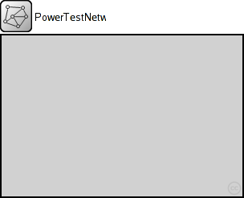
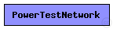
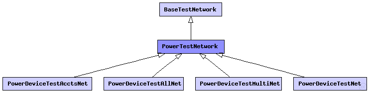

This documentation is released under the Creative Commons license
This documentation is released under the Creative Commons licenseBase test network for power (battery) tests.
The following diagram shows usage relationships between types. Unresolved types are missing from the diagram. Click here to see the full picture.
The following diagram shows inheritance relationships for this type. Unresolved types are missing from the diagram. Click here to see the full picture.
| Name | Type | Description |
|---|---|---|
| BaseTestNetwork | network |
Basis definition of test networks. |
| Name | Type | Description |
|---|---|---|
| PowerDeviceTestAcctsNet | network |
Test uses the two-phase DutyCycle device, which assigns each of the two ON periods to a different activity. |
| PowerDeviceTestAllNet | network |
Combines PowerDeviceTestMultiNet and PowerDeviceTestAllNet. Uses three instances of the DeviceDuty and DeviceDutySimple devices, one of which has no continuous CURRENT draw, only discrete ENERGY draw from the Battery. |
| PowerDeviceTestMultiNet | network |
The test host now has two DutyCycleSimple devices, each with different parameters. |
| PowerDeviceTestNet | network |
Fundamental test case, used for basic unit testing. The Host includes only the Battery and the DutyCycleSimple device. |
| Name | Type | Default value | Description |
|---|---|---|---|
| playgroundSizeX | double | ||
| playgroundSizeY | double | ||
| numHosts | int |
| Name | Value | Description |
|---|---|---|
| isNetwork |
// Base test network for power (battery) tests. network PowerTestNetwork extends BaseTestNetwork { parameters: double playgroundSizeX; double playgroundSizeY; int numHosts; connections allowunconnected: }
This documentation is released under the Creative Commons license